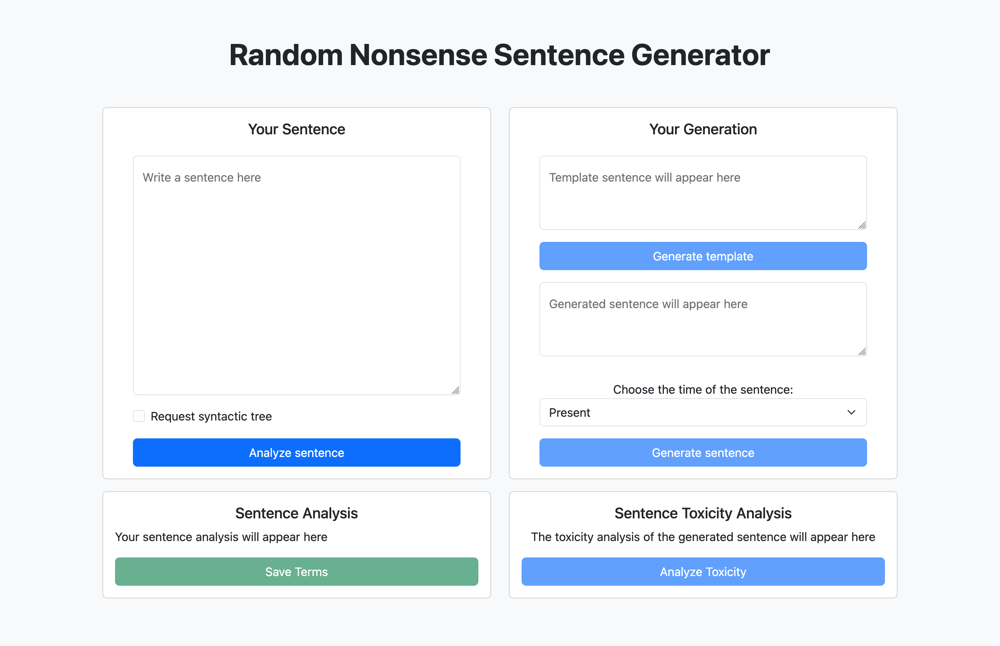

Random Nonsense Sentence Generator is a project developed, by Leonardo Erta, Giovanni Panziera and Iacopo Carretta to explore natural language processing and web application development. The application allows users to generate sentences and analyze them using the Google Cloud Natural Language API. It provides features such as sentence structure analysis, nonsense sentence generation, and toxicity detection, all accessible through a simple web interface. The project demonstrates integration of cloud-based NLP services, Java backend development with Spring Boot, and a modern frontend using Bootstrap.
| Library | Version | Used Features |
|---|---|---|
| Spring Boot | 3.4.5 | - Web application framework - RESTful endpoints - Template engine integration |
| Bootstrap | 5.3.6 | - Responsive layout - UI components |
| Graphviz Java | 0.18.1 | - .dot file parsing - Rendering graph to image |
| Maven | Latest | - Project build automation - Dependency management - Test reporting |
| Maven Surefire Report Plugin | 3.5.3 | - Generates HTML reports of unit tests |
| Thymeleaf | Latest | - Server-side templating - Dynamic HTML rendering |
| JUnit | Latest | - Unit testing framework - Test reporting |
| Mockito | 5.2.0 | - Mocking framework for unit tests |
| JSON Library | 20230618 | - JSON data processing - API response handling |
| Jekyll | Latest | - Documentation site generation - Markdown processing - Documentation templating |
| API | Purpose | Features Used |
|---|---|---|
| Google Cloud Natural Language | - Text Analysis - Content Moderation |
- Syntactic analysis - Entity extraction - Part-of-speech tagging - Toxicity detection |
Follow these instructions to get a copy of this project up and running on your local machine for development and testing purposes. See deployment for notes on deploying the project on a live system.
# macOS (Homebrew)
brew install openjdk@21
# Ubuntu/Debian
sudo apt-get update
sudo apt-get install openjdk-21-jdk
# Fedora
sudo dnf install java-21-openjdk
# Arch Linux
sudo pacman -S jdk-openjdk
Install Maven, installation instructions here
Install Graphviz (version 12.2.1), installation instructions here
This project uses Google Cloud Natural Language AI for text analysis. Get an API key here
After cloning the repository, enter your API key in application.properties found in the resources directory:
GOOGLE_API_KEY=ENTER YOUR API KEY
To build the project, run in the root folder:
./mvnw clean package
Skip tests during build:
./mvnw clean package -DskipTests
Skip test compilation and execution:
./mvnw clean package -Dmaven.test.skip=true
Start the application:
./mvnw spring-boot:run
Or run the JAR directly (after building):
java -jar nosense.jar
The jar file is found in the target directory.
To generate test reports, run:
mvn site
This generates HTML reports in target/site directory. Open surefire.html in browser.
View the test report here
Assuming Jekyll and Bundler are installed on your computer, you can build and preview documentation locally
bundle installbundle exec jekyll servePreview at localhost:4000
The built site is stored in the directory docs/pages/_site.
Note: Put images in images folder
Before deploying to production, be aware of these security risks and limitations:
Storage
Input/Output Security
Authentication & Authorization
Cloud Resources
Recommended Actions
The Random Nonsense Sentence Generator provides a web interface with the following features:

The dependency graph provides a visual representation of the sentence structure:
Shows confidence scores for different toxicity categories